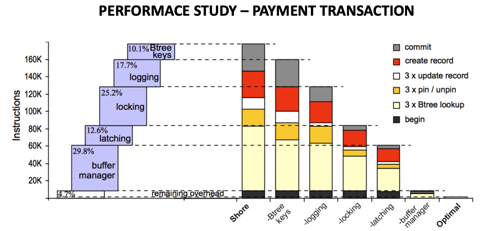

OLTP Through the Looking Glass Notes
OLTP – Through the Looking Glass Notes¶
OLTP (Online Transaction Processing) vs OLAP (Online Analytical Processing)¶
- OLTP systems are optimized for transactional performance instead of data analysis.
- OLTP - High frequency of small load queries.
- OLAP systems provide analysis of data for business decisions.
- OLAP - Low frequency of big load queries.
{kind=link}
OLTP (Eventual Consistency is favored over strong consistency)¶
- Note the Some activity may not appear yet
{kind=link}
NewSQL for OLTP¶
{kind=link}
OLTP – What has changed?¶
- Modern hardware has become cheaper and better (cheaper RAM, faster processors),
- OLTP transactions take microseconds.
- Many OLTP databases can fit in main memory.
- Institution can create clusters of many machines with aggregate memory reaching 100’s of Gigabytes.
- Rising trend: Internet application require “database-like” applications without full suite of standard database features
- logging, locking, latching, multi-threading, buffer management and more are not fully necessary.
- But the database architecture has not changed much (until 2008).
Alternative DBMS Architectures¶
- Logless database: Recovery not required or recovery from other sites in cluster
- Single threaded database: Multi-threading was required to overcome latency because slow disk I/O
- Transaction-less database: In distributed internet application, eventual consistency is often favored over transactional consistency
- Work by Stonebraker - “The End of an Architectural Era (It’s Time for a Complete Rewrite), 2007”
- Light weight transactions - all reads are required to be done before any writes are acceptable
PAPER STRUCTURE¶
OBJECTIVE¶
To optimize the OLTP databases systems for main memory storage as well as other database variants so as to reach new benchmarks.
METHODOLOGY¶
- Use an open source database (SHORE) and benchmark it (TPC-C).
- Identify major overheads or database features that we can remove.
- Remove overheads one-by-one and benchmark the modified system at each point.
CONTRIBUTION¶
The paper identifies overheads and analyzes the isolated database performance after removal of each overhead.
WHAT’S SHORE?¶
- SHORE (Scalable Heterogeneous Object REpository): project was developed at University of Wisconsin – Madison in early 1990.
- Layered architecture: users can choose level of support for their applications from several components
- Has all modern DBMS features
WHAT’S TPC-C?¶
- It is an OLTP benchmark - mix of 5 concurrent transactions of different types and complexity.
- Designed to represent any industry that manage, sell or distribute a product or service.
- Designed to scale with suppliers and warehouses.
- 90% of the transactions are of type:
- New order transaction (entering orders)
- Payment transaction (recording payments)
FOUR MAJOR OVERHEADS WERE FOUND & REMOVED¶
- Logging
- Assembling log records and tracking down all changes in database structures slows performance
- Logging is useful for recovery which is not always required or can be achieved in other ways (other DB sites)
- Locking
- All accesses to database structures are governed by Lock Manager.
- Latching
- In multi-threaded database, data structures have to be latched before they can be accessed.
- But we are use single-threaded system which is in memory.
- BufferManagement
- Main memory database system do not need to access pages through a buffer pool.
PERFORMACE STUDY - EXPERIMENT SETUP¶
- Entire database was pre-loaded to memory.
- It was ensured that main-memory resident experiments didn’t generate disk traffic.
- Results were measured in:
- Throughput - What is it? (Number of transactions executed per second)
- CPU Instruction Count – Why?
- Instruction counts are:
- Representative of the total run-time code path length
- Deterministic (no randomness)
- Instruction counts are:
- 11 switches in SHORE to remove functionality (or perform optimizations), which provides results for six arrangements
SHORE DECOMPOSTION¶
Due to the tight integrations of all managers in Shore, it was not possible to cleanly separate all the components, hence they were removed in an order i.e. (logging, locking or latching, latching or locking, buffer manager)
{kind=link}
{kind=link}
Components in SHORE and Their Removal¶
- Logging
- Features:
- Implements a write-ahead logging
- Logs are identified by sequence numbers Log Sequence Numbers (LSN)
- Needs a close interaction with log manager, buffer manager and transaction manager
- Removal:
- Group commits were allowed and log buffer size was increased
- Commented out the functions that were used to write and prepare the log records
- Addition of if-statements to avoid processing LSNs
- Features:
- Locking (locking and latching can be removed in any order)
- Features:
- Provides two-phase locking with transactions having ACID properties
- Each transaction tracks and lists the locks it holds
- Locks are gained when transaction enters the prepared state and released at the end of transaction
- Removal:
- Modified the Lock Managers method to return immediately (as if checks for locks were satisfied)
- Modified the methods related to pinning (finding) records, by using B-tree index access
- Features:
- Latching
- Removal:
- Modified all mutex requests to return immediately (as if mutual exclusion request was satisfied)
- Addition of if-statements to avoid the requests for latches
- Replaced B-tree methods with methods that did not use latching
- Removal:
- Buffer Management - Involved most of the modifications
- Features:
- Uses a fix method to read/write pages
- Used latching to ensure consistency for fix method
- Reading a record is performed by issuing a pin / unpin method call.
- Updates occur by copying the record from the buffer pool to the user’s address space, changes are made there and then given to the storage manager
- Removal:
- Shore’s page allocation mechanism was dropped to use standard malloc library for creation of new records
- Not able to completely remove page interface to buffer frames
- But mapping between pages and buffer frames was accelerated to reduce overhead
- Features:
PERFORMACE STUDY – EXPERIMENT SETUP¶
- Calls to SHORES’s methods for New Order and Payment transactions
- New Order transaction has 10 times instructions of Payment
- For simplicity, we discuss Payment transaction 
- RESULT - Modifications took us from 640 -> 12700 transactions/second. (20 fold increase)
- Optimal - Memory-resident, hand-built B-tree package a.k.a minimal overhead kernel
{kind=link}
Experiment Results¶
- After all optimizations and deletions, SHORE is left with core residue (all CPU cycles, no I/O).
- Achieved a throughput of 80 microseconds/transaction or 12700 transactions/second
- Out of box SHORE - 588 microseconds/transaction or 640 transactions/second
- 12700 ÷ 640 = 19.843 ~ 20 times improvement in overall throughput
FUTURE IMPLICATION¶
- Concurrency Control
- Transactions-at-a-time processing allows concurrency control to be turned off.
- Old research proved ‘dynamic locking’ was better than ‘concurrency control’ but for disk-based load.
Future Work:
- Optimistic concurrency control might be better for main-memory load.
- Multi-core Support
- Multiple transaction concurrently on separate cores, requires latching
- Future OLTP engines should deal with multiple cores.
Future Work:
- Use virtualization to make each core acts as a single-threaded machine.
- Intra-query parallelism
- Replication Management
- Active-passive scheme
- Every object has an “active” primary copy, to which all updates are first directed.
- Log of changes is then spooled over the network to one or more “passive” backup sites.
- Unless two-phase commit is used, remote copies are not transactionally consistent with primary.
- Future work : Active-active scheme
- All replicas are “active” and the transaction is performed synchronously on all replicas.
- Advantage - nearly instantaneous failover recovery.
- Two-phase commit will introduces latency, therefore techniques to avoid it are needed (i.e. performing transactions in timestamp order).
- Active-passive scheme
- Weak Consistency
- Web-oriented OLTP insist on replicas, usually over a WAN, to achieve high availability and disaster recovery.
- Problem - Nobody is willing to pay for ‘normal’ transactional consistency over a WAN.
- Solution - Eventual Consistency
- To ensure eventual consistency we require transaction consistency under a general workload.
- Interesting problem - Removing transactional support (locking and logging) from a main memory system could yield a very high performance database.
CONCLUSION¶
- Buffer management and locking operations are the most significant contributions to system overhead.
- Unless one strips out all four components, the performance of a main memory-optimised database is not better than a conventional database where most of the data fits in RAM.
- A fully stripped down system gives us many folds performance.
- Single threaded
- Implements recovery via copying state from other nodes in the network
- Fits in memory
- Uses reduced functionality transactions
EXAMPLES OF IN-MEMORY DATABASE¶
- MemSQL
- VoltDB
- HEKATON - SqlServer
- Google Cloud Spanner
Authors:¶
Stavros Harizopoulous, Daniel Abadi, Samuel Madden and Michael Stonebraker